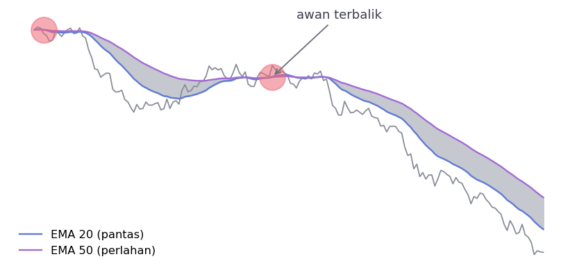
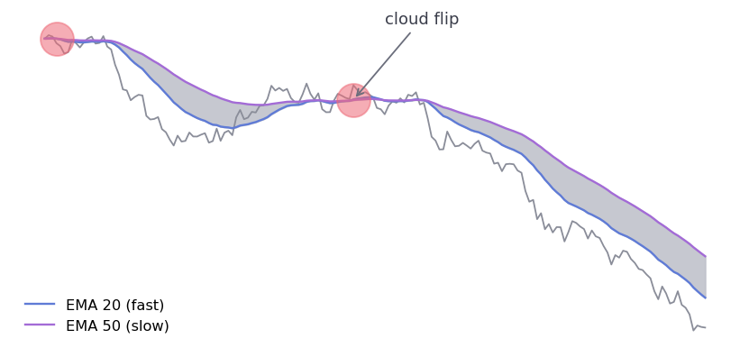
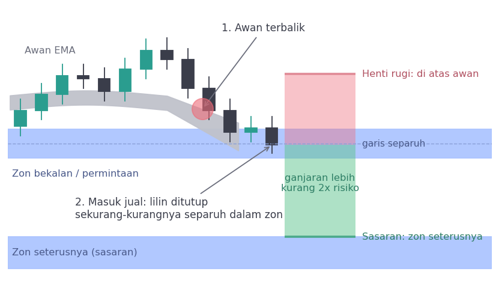
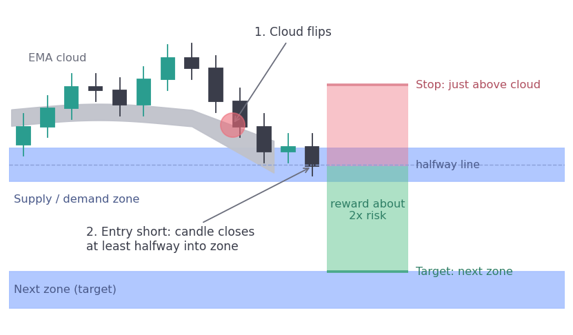
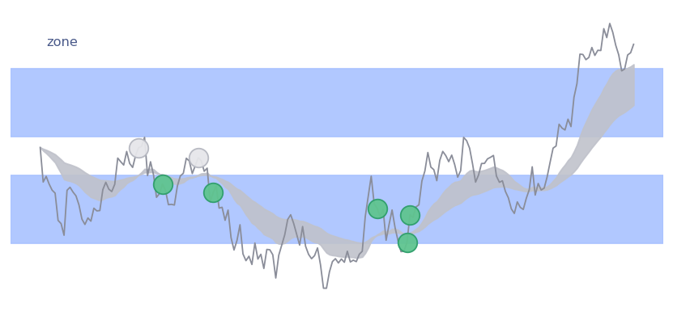

Strategi 5 minit yang popular, diuji pada Bitcoin dan EthereumA popular 5-minute setup, tested on Bitcoin and Ethereum
Saya kodkan satu strategi yang sedang tular di X dan jalankan pada data bertahun-tahun. Inilah hasilnya.I coded a setup that has been going around on X and ran it on years of data. This is what came out.
- Strategi: awan EMA terbalik, diambil hanya apabila harga berada dalam zon bekalan atau permintaan. Kredit kepada @Tradewrite.
- Carta 5 minit Bitcoin (694,855 bar): tiada kelebihan selepas kos. Kos satu pusingan ialah 16 bps, henti rugi biasa hanya 22 hingga 25 bps.
- Carta 4 jam Bitcoin dan Ethereum, di mana kos kecil: sebelum kos pun, hasilnya sekitar sifar. Sampel hanya kira-kira 250 dagangan.
- Saya tidak jumpa apa-apa untuk diteruskan. Itu bukan bukti strategi ini mati.
- The setup: an EMA cloud flip, taken only when price is inside a supply or demand zone. Credit to @Tradewrite.
- Bitcoin 5-minute charts (694,855 bars): no edge after costs. A round trip costs 16 bps and the usual stop was only 22 to 25 bps.
- Bitcoin and Ethereum 4-hour charts, where costs are small: before costs, the results still sat around zero. The sample is only about 250 trades.
- I found nothing to build on. That is not proof the setup is dead.
Seorang peniaga di X berkongsi satu strategi 5 minit yang nampak mudah. Peraturannya cukup jelas untuk dikodkan, jadi saya kodkan dan jalankan pada Bitcoin.
Hasil pertama mengecewakan. Saya tertanya-tanya sama ada kos sahaja puncanya, lalu saya ulang ujian pada carta 4 jam. Dua ujian itu dicatat di bawah.
A trader on X shared a 5-minute setup that looks simple. The rules were clear enough to code, so I coded them and ran them on Bitcoin.
The first result was disappointing. I wondered if costs were the whole reason, so I repeated the test on 4-hour charts. Both tests are written up below.
01Strategi ituThe setup
Awan ialah ruang antara dua purata bergerak eksponen (EMA), 20 dan 50. Apabila garisan bersilang, awan "terbalik". Isyarat masuk hanya diambil jika harga berada dalam zon bekalan atau permintaan.
Strategi ini milik @Tradewrite. Saya tidak membaca panduan penuh yang dipautkannya. Saya hanya mengodkan apa yang ada dalam utas.
The cloud is the gap between two exponential moving averages (EMAs), 20 and 50. When the lines cross, the cloud "flips". The entry is only taken if price is inside a supply or demand zone.
The setup belongs to @Tradewrite. I did not read the full guide he links. I only coded what was in the thread.




Utas itu tidak menetapkan cara zon dilukis, penapis tambahan, jarak henti rugi dan titik sasaran. Saya isi dengan pilihan sendiri: pivot dengan lonjakan volum, tinggi zon 0.8 ATR, penampan henti rugi 0.2 ATR, dan sasaran di tepi zon seterusnya.
The thread does not say how zones are drawn, what extra filter to use, how far the stop goes or where the target sits. I filled those in myself: pivots with a volume spike, zone height of 0.8 ATR, a stop buffer of 0.2 ATR, and a target at the near edge of the next zone.
Pilihan itu milik saya. Ujian ini hanya memberitahu kita tentang versi saya, bukan semestinya versi penulis asal.
Those choices are mine. This test only tells us about my version, not necessarily the author's.

02Ujian 5 minitThe 5-minute test
Data ialah 694,855 bar Bitcoin 5 minit dari Bybit, Mac 2020 hingga November 2026, dibahagi 70/30 untuk ujian dalam sampel dan luar sampel. Kos: yuran 0.06% dan gelinciran 0.02% setiap hala, iaitu 16 bps satu pusingan.
Selepas kos, kelima-lima versi negatif. Zon mengurangkan dagangan sebanyak 46% tetapi tidak memperbaik hasil. Sebelum kos, kelebihan awan sahaja ialah +0.041R dan dengan zon −0.004R, iaitu hampir sifar. (R ialah satu unit risiko.)
The data is 694,855 Bitcoin 5-minute bars from Bybit, March 2020 to November 2026, split 70/30 for in-sample and out-of-sample testing. Costs: a 0.06% fee and 0.02% slippage each way, so 16 bps a round trip.
After costs, all five versions were negative. The zone cut the number of trades by 46% but did not improve the result. Before costs, the flip alone had +0.041R and with the zone −0.004R, which is about zero. (R is one unit of risk.)
03Ujian 4 jamThe 4-hour test
Pada carta 4 jam, kos hampir tidak penting. Henti rugi purata kira-kira 363 bps, jadi 16 bps hanya sekitar 0.04R. Saya guna peraturan yang sama, dengan skala diubah sebelum ujian: pivot 6 bar dan tetingkap 6 bar. Data ialah Bitcoin (14,477 bar) dan Ethereum (12,349 bar).
Keputusannya sama. Julat keyakinan 95% untuk kelebihan sebelum kos merangkumi sifar bagi kedua-dua versi.
On 4-hour charts, costs hardly matter. The average stop is about 363 bps, so 16 bps is only around 0.04R. I used the same rules, rescaled before the test: 6-bar pivots and a 6-bar window. The data is Bitcoin (14,477 bars) and Ethereum (12,349 bars).
The answer was the same. The 95% range for the edge before costs includes zero for both versions.
| VersiVersion | TempohWindow | DaganganTrades | Purata R sebelum kos (julat 95%)Average R before costs (95% range) | Purata R selepas kosAverage R after costs |
|---|---|---|---|---|
| Awan sahajaFlip only | Dalam sampelIn-sample | 281 | +0.014 (−0.149 to +0.185) | −0.065 |
| Awan sahajaFlip only | Luar sampelOut-of-sample | 122 | −0.164 (−0.384 to +0.074) | −0.264 |
| Peraturan asasBase rules | Dalam sampelIn-sample | 174 | +0.051 (−0.108 to +0.242) | −0.037 |
| Peraturan asasBase rules | Luar sampelOut-of-sample | 78 | +0.030 (−0.214 to +0.284) | −0.106 |
Bitcoin dan Ethereum pula bertentangan arah. Pada peraturan asas, Bitcoin sebelum kos ialah +0.216R dalam sampel dan −0.143R luar sampel. Ethereum ialah −0.089R dan +0.202R. Apabila tanda berbalik begini, ia biasanya bunyi rawak.
Bitcoin and Ethereum also pointed in opposite directions. On the base rules, Bitcoin before costs was +0.216R in-sample and −0.143R out-of-sample. Ethereum was −0.089R and +0.202R. When the sign flips like this, it usually looks like noise.
Pada 5 minit, kos menjadi masalah. Pada 4 jam, kos bukan lagi masalah, namun kelebihan sebelum kos masih tidak kelihatan. Jadi kos bukan satu-satunya sebab.
On 5 minutes, costs were a problem. On 4 hours, costs are no longer the problem, yet the edge before costs still does not show up. So costs were not the only reason.
04Apa yang kod saya tidak tanyaWhat my code never asked
Pada ujian 5 minit, kod saya mengambil beberapa dagangan dengan sasaran hanya 2.5, 4.0 dan 7.5 bps. Sasaran tercapai, tetapi ketiga-tiganya rugi kerana kos ialah 16 bps.
Sesiapa yang melihat carta akan terus melepaskan dagangan sebegitu. Kod saya tidak pernah ditanya sama ada ia berbaloi. Saya tidak menulis semakan itu.
In the 5-minute test, my code took a few trades with targets of only 2.5, 4.0 and 7.5 bps. The targets were hit, but all three lost money because the cost is 16 bps.
Anyone looking at the chart would skip a trade like that. My code was never asked whether it was worth taking. I never wrote that check.
- EMA 20 bersilang dengan EMA 50
- Zon: pivot dan lonjakan volum
- Masuk separuh ke dalam zon
- Henti rugi di luar awan
- Jawapan sama setiap kali
- EMA 20 crosses EMA 50
- Zone: pivot plus volume spike
- Enter halfway into the zone
- Stop beyond the cloud
- Same answer every time
- Mengapa zon ini, mengapa sekarang
- Adakah pergerakan sudah selesai
- Adakah sasaran melebihi kos
- Sesi dagangan dan berita
- Boleh melepaskan isyarat yang sah
- Why this zone, why now
- Whether the move is already done
- Whether the target beats costs
- Session and news
- Can skip a valid signal
05Apa yang saya belum tahuWhat I don't know
Saya belum menguji dagangan budi bicara, jadi saya tidak boleh kata ia lebih baik daripada bot. Sampel 4 jam juga kecil, kira-kira 250 dagangan. Ini bermakna saya gagal menunjukkan kelebihan, bukan bahawa kelebihan itu pasti sifar.
Utas itu juga menyebut pendapatan harian USD 1,000 hingga 3,000 dan USD 30,000 sebulan. Itu tuntutan penulisnya sendiri dan saya tidak dapat mengesahkannya.
I have not tested discretionary trading, so I cannot say it beats a bot. The 4-hour sample is also small, about 250 trades. That means I failed to show an edge, not that the edge is certainly zero.
The thread also mentions $1,000 to $3,000 days and $30,000 a month. Those are the author's own claims and I could not verify them.
Jangan baca ini sebagai "bot kalah, manusia menang". Data ini tidak menunjukkan begitu.
Do not read this as "bots lose, humans win". The data does not show that.
06Soalan untuk difikirkanQuestions to think about
Jika anda berkongsi strategi dagangan, sertakan bilangan sampel, kos dan dagangan yang rugi. Pembaca boleh menilai sendiri selepas itu.
If you share a trading setup, include the sample size, the costs and the losing trades. Readers can then judge for themselves.
Ujian seperti ini berguna kerana ia menjawab dengan angka, bukan tangkapan skrin. Dalam kes ini, jawapannya ialah saya tidak jumpa apa-apa untuk diteruskan. Jika kelebihan wujud, mungkin ia berada pada bahagian yang tidak dapat saya tulis sebagai peraturan. Itu hanya dugaan dan saya belum mengujinya.
A test like this is useful because it answers with numbers, not screenshots. In this case the answer is that I found nothing to build on. If there is an edge, it may sit in the part I cannot write as a rule. That is only a guess and I have not tested it.
Bahagian mana dalam dagangan anda sendiri yang tidak boleh anda tulis sebagai peraturan?
Which part of your own trading can you not write as a rule?
SumberSources
- @Tradewrite, utas "Cloud Flip" di X (teks dan tujuh imej carta yang dikongsi dengan saya). Panduan penuh dipautkan penulis di thetradewriter.com/supply-demand-trader; saya tidak membacanya.The author links a full guide at thetradewriter.com/supply-demand-trader; I did not read it.
- Lilin Bybit BTCUSDT dan ETHUSDT (kontrak berterusan linear): 5 minit untuk Bitcoin dan 4 jam untuk kedua-duanya, sehingga 2 November 2026, melalui proksi data Nyrobrain.Bybit BTCUSDT and ETHUSDT linear perpetual candles: 5-minute for Bitcoin and 4-hour for both, to 2 November 2026, via the Nyrobrain data proxy.
- Ujian sendiri penulis (Nyrobrain). Parameter 5 minit dan 4 jam ditetapkan sebelum ujian dan tidak ditala selepas melihat keputusan.The author's own backtests (Nyrobrain). The 5-minute and 4-hour parameters were set before the tests and not tuned after seeing results.
Menulis Nota Lapangan tentang pembiayaan PKS dan dagangan sistematik. Berpangkalan di Kuala Lumpur.Writes Field Notes on small business finance and systematic trading. Based in Kuala Lumpur.